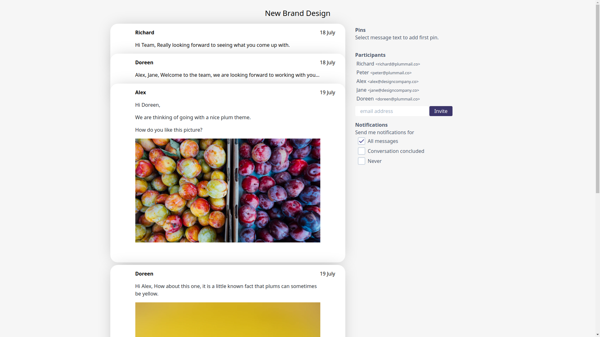

Building a waitlist for plum mail
I have recently started working on a new project, to build a sucessor to email and chat. A way of communicating that is more organised than email and less distracting than chat applications.
Yesterday we launched plum mail on product hunt. We got some great support from IH, thank you.
Plum mail is prelaunch so we need a waitlist. I asked about ways to run a waitlist a few days ago.
There were several suggestions, but in the end we decided to get users to email us. To do this we added the following message to our webpage:
To join the waitlist, email us: yesplease@plummail.co
We made use of a mailto link that set a subject and body.
- subject: Count me in
- body: I'm looking forward to trying plummail.co because ...
This approach got us over 100 sign-ups in a day. What surprised us was that most people would write something after the "..." only ~10% said nothing. The messages we got fell into three categories.
First up were people answering the question, and explaining why they were looking forward to trying plum mail.
features you've described so far look really cool and useful, especially being able to select email text and pin it. Please count me in and add me to the waitlist Love the fact you can use markdown when composing messages
As our video demonstrated several features we are yet to implement, this allowed us to see which features people are most excited about. Knowing what excits someone allows us to start a conversation with them when we get them on the platform that starts from the features they're are most excited about.
Some people mentioned features/integrations that we had not shown.
This sounds interesting and exciting. With these features, it would be great if it can be used as a host for other domains, e.g. to use plummail but sender is our regular gmail or corporate email.
Interesting to see how you’re thinking about Microsoft integration (Exchange, Teams, Outlook).
This allowed us to work out if someone had misunderstood what we were offering and if so, to try and improve our message.
Some of the suggested features we don't plan to work on, but because we know this we can reply and manage expectations explaining what they might want to do differently or why our product isn't for them. Doing this before they get disappointed should help us have a productive conversation with them.
Finally general enthusiasm
I'm looking forward to trying plummail.co because … you are awesome ⚡️ I'm looking forward to trying plummail.co because I F*&%#^ hate email.
Several people expressed a dislike for the status quo with email and instant messengers.
These are lovely messages to get and a great encouragement to us, even if there is not much follow up action from our end.
Conclusion
We have no idea if this approach reduced the number of email addressed we have on our waitlist, however we do not mind, as the quality of feedback is so high. We are at a very early stage where we would rather get 10 of the right people to sign up than 100 who would never use it again.
Do you think this approach would work for your product?